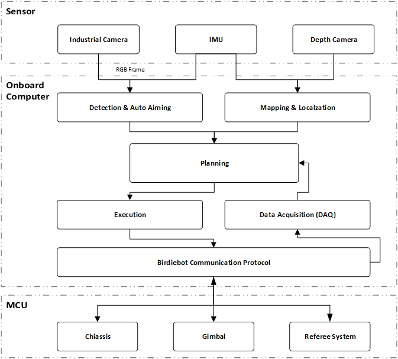

Bubble设计模式
- Authors
Ligcox
- Maintainers
Ligcox
- Contact
- Last edit date
2022/08/25
- Copyright
This document has been placed in the public domain.
目录
RoboMaster机器人的软件系统主要包含了 感知 、 决策 和 控制 三个部分。
控制 部分接收来着遥控器、裁判系统或上位机的输入，通过控制算法，操纵实际的机械结构。控制部分主要由MUC负责，再本文档中不再赘述。
感知 和 决策 部分是Bubble主要实现的内容。在RMU中，机器人所处的环境使得机器人需要执行各种不同的任务，这些任务在Bubble中以不同功能包的形式组织在一起。 通过对这些功能包的改变、组合，能够实现机器人在RoboMaster赛场上完成这些任务。
系统架构
系统的输入包括了感知数据（来自工业相机、深度相机的图像、激光雷达的点云、IMU测量的状态等），这些信息主要来自与机器人上的各种传感器。 输出信息主要为各类机械结构的控制信息，这些信息交由MUC处理产生机械结构的控制信号。 Bubble负责对输入的信息进行处理，产生输出信息，通过BCP发送至MUC，使机器人执行预期的行为。 Bubble的模块示意图如下：
模块划分和功能包维护
面对RMU赛场复杂多变的任务，在Bubble将全部的逻辑分成了 任务 和 功能 进行系统的结构。
不同的 功能 模块在不同的仓库中进行维护，在代码仓库中存在一个或多个 任务 模块，这些任务模块以ROS功能包的形式进行维护。
不同 任务 模块间通过RMW的进行数据的交互。在 任务 模块中还拆分成了若干个子任务，这些子任务通过python packages的形式存在于 任务 模块的功能包中。
总的来说，通过RMW将系统间不同的功能模块连接，并在功能模块内部实现功能的具体逻辑。
消息接口
Bubble中通过RMW实现Node间的数据交互。通常，绝大部分数据能够通过 ROS的内置类型 进行传递。
对于特殊数据类型，在 bubble_interface 模块中定义了Bubble Node间通讯的额外数据类型，这些数据类型包含了：
- 比赛裁判系统数据
由
bubble_interface/game_msgs功能包实现定义上位机需要使用裁判系统的ROS数据类型
原则上变量命名与 RoboMaster裁判系统串口协议 相同。
- 控制数据
由
bubble_interface/rmctrl_msgs功能包实现定义了下位机执行控制指令的ROS数据类型
- 目标识别数据
由
bubble_interface/bboxes_ex_msgs功能包实现定义了目标识别器识别对象的ROS数据类型
关于
bboxes_ex_msgs功能包的更多信息，您可以参阅相关项目和bboxes_ex_msgs的REAMDE文件